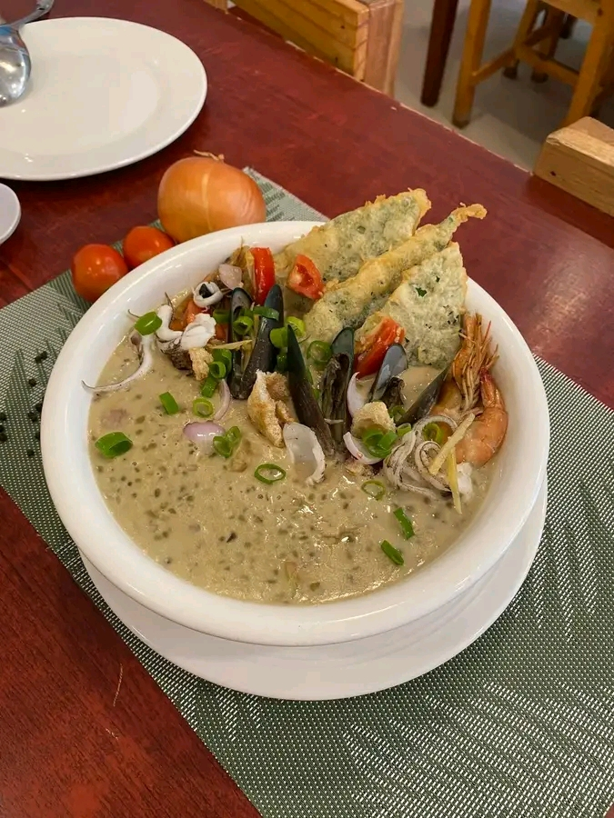
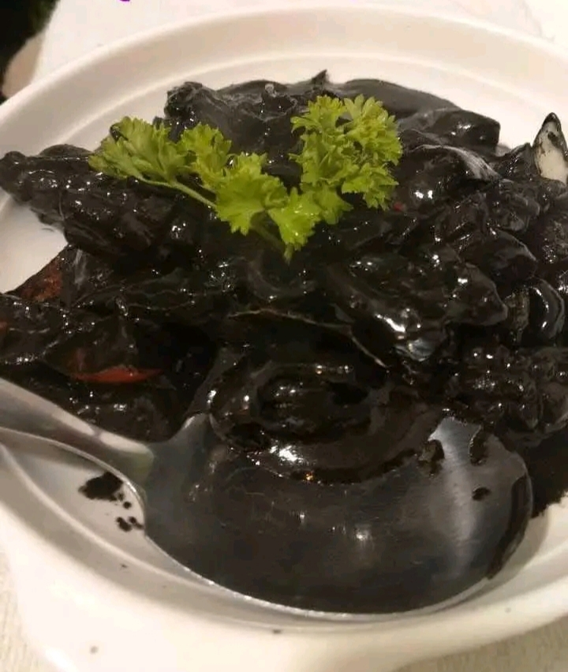
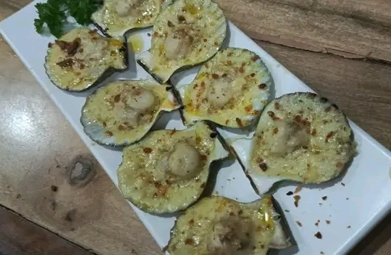

Monggo with Seafood
A healthy dish made of mung beans and seafood. Light, tasty, and filling. High in protein, fiber, and vitamins like D, calcium, and iron.

Squid Adobo with Ata
Filipino dish where squid is cooked in soy sauce, vinegar, garlic, and ink. Rich, savory, and high in protein and minerals like iron and phosphorus.

Chicken Inasal
Grilled chicken marinated in vinegar, calamansi, garlic, and spices. Smoky, juicy, and flavorful. High in protein and vitamins for energy and strong muscles.

Baked Scallop
Fresh scallops baked with butter, garlic, cheese, and seasonings. Creamy, soft, and flavorful. High in protein, vitamin B12, magnesium, and zinc.